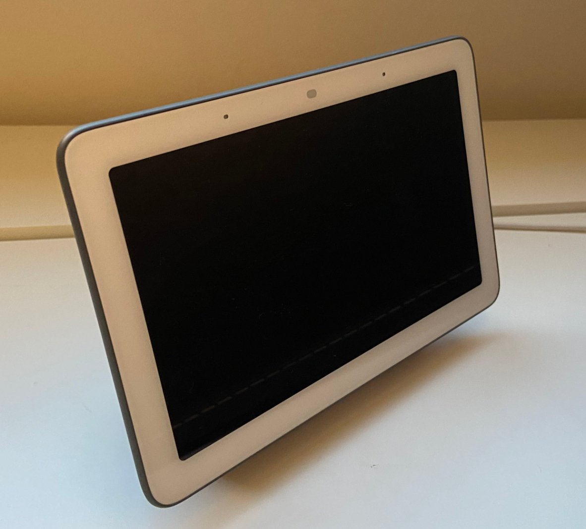

The Autopsy Report · Device #099
The Google Nest Hub, 2nd Generation
The smart display with radar inside: Google's Soli chip watches you sleep — no camera required. We haven't opened one; the teardowns and the FCC filing did.
What is this thing?
The Nest Hub (2nd generation), model GUIK2 (retail GA01892-US), is Google's 7-inch smart display — and the first to carry Soli, the 60 GHz radar Google first shipped in the Pixel 4. Soli tracks sleep and gestures without a camera; there's deliberately no camera on this device at all. It launched in March 2021. 9to5Google review Hackaday teardown
Not yet on our bench
We don't own a Nest Hub, so nothing here comes from our hands: no disassembly, no board photos, no measurements. Everything below is built from public records — published teardowns, the FCC filing coverage, and the radar chip's datasheet — with each claim linked to its source. When a unit lands on our bench, we'll verify the hardware firsthand and update this page.
A short history
- 2018The original Google Home Hub ships — a smart display with no camera, a deliberate privacy pitch. 9to5Google review
- 2019Google's Pixel 4 debuts Soli, a 60 GHz gesture radar — the technology looking for a better home. Android Central
- January 4, 2021Press spots the FCC filing for model GUIK2: an "interactive device" with Bluetooth, Wi-Fi, Zigbee, and a 58–63.5 GHz Soli radio — the secret is out before the announcement. GSMArena
- March 2021The second-generation Nest Hub launches with sleep tracking via Soli. 9to5Google review
- May 2023A published teardown documents the internals: Amlogic applications processor, Infineon radar chip, Broadcom wireless. Hackaday teardown
The outside
A 7-inch display on a fabric-covered base, visually near-identical to the first generation — you can't tell them apart from across the room, which is why the photo below is presented as a line representative: we could not verify the generation from the photo alone. No camera; the Soli sensor hides behind the glass. 9to5Google review

The board
Published teardowns describe two boards: a main board built around an Amlogic applications processor with Samsung memory and Broadcom wireless, and a separate small radar board carrying the Infineon Soli chip. The Hackaday teardown notes debug wiring on the board — we report its existence and stop there; no pinouts, no procedures. Hackaday teardown Electronics360 teardown
Under the microscope: the chips
What's on the board, what each part does, and how sure we are. Confirmed means a primary source (FCC exhibit or manufacturer document). Likely means well-corroborated public records.
| Chip | What it does | How we know | Dig deeper |
|---|---|---|---|
| Amlogic S905D3G S905D-series SoC |
Main applications processor — runs the Cast-platform software and the display. | Likely Identified in the Hackaday teardown. (Some records name the S905D family; we report the marking the teardown documents.) | Hackaday teardown |
| Infineon BGT60TR13C 60 GHz radar |
The Soli sensor — motion and sleep tracking via millimeter-wave radar. Infineon's datasheet describes the 60 GHz FMCW radar with integrated antennas. | Likely Identified in the Hackaday teardown; function confirmed by Infineon's datasheet. | Infineon datasheet (PDF) |
| Broadcom wireless | Wi-Fi/Bluetooth combo radio. | Likely Identified in the Electronics360 teardown; consistent with the filing's Bluetooth/Wi-Fi/Zigbee listing. | Electronics360 teardown |
| Samsung memory DDR3 + storage |
Working memory and flash storage. | Likely Identified in the Electronics360 teardown. | Electronics360 teardown |
The government's file on this display
The device carries FCC ID A4R-GUIK2, grantee Google LLC, model GUIK2. Press coverage of the filing (January 2021) described an "interactive device" with Bluetooth, Wi-Fi, Zigbee, and Soli operating at 58–63.5 GHz, using an electronic label. We could not verify the exact grant date or the filing's confidentiality terms from the records we reviewed, so we don't state them. GSMArena Android Central
Debug and service modes
A published teardown mentions debug wiring on the board. We confirm that public observation exists and publish nothing further: no pinouts, no procedures, no bypasses. Our posture throughout: we listen, we don't knock. If a bench unit ever reveals a diagnostic interface, we'll document it read-only — never bypasses, never credential or key extraction.
What public records show
- The radar is the product: Soli at 58–63.5 GHz does sleep and gesture sensing with no camera — the privacy pitch is architectural, not just a promise. GSMArena Infineon datasheet
- Two boards, two jobs: the Amlogic main board computes, the Infineon radar board senses — the split keeps the 60 GHz RF away from the digital noise. Hackaday teardown
- The FCC filing leaked the product's headline feature two months before launch — regulatory paperwork remains the best pre-announcement source in consumer hardware. GSMArena
What we haven't done
- No disassembly — we don't own a unit.
- No board-level verification of any chip identity in the table above.
- No radar, radio, or power measurements of our own.
- No probing of the debug wiring and no firmware observation of any kind.
By the numbers
- Model: GUIK2 (retail GA01892-US) · FCC ID: A4R-GUIK2 · Grantee: Google LLC
- SoC: Amlogic S905D3G (S905D series) · Radar: Infineon BGT60TR13C (60 GHz Soli, 58–63.5 GHz)
- Radios: Bluetooth, Wi-Fi, Zigbee (per filing coverage)
- Display: 7-inch · Camera: none — by design
- Launched: March 2021
Words to know
Every term this page uses, in plain English. No prior knowledge required.
- Soli
- Google's 60 GHz radar for sensing motion — gestures, presence, sleep — without a camera.
- Millimeter-wave radar
- Radio at tens of gigahertz, with wavelengths of a few millimeters — fine enough to detect breathing and small gestures.
- FMCW
- Frequency-modulated continuous wave — the radar technique of sweeping frequency and measuring the echo's shift to find distance.
- Zigbee
- A low-power mesh radio standard for smart-home devices — lights, sensors, locks talking to each other.
- System on a chip (SoC)
- The whole computer — processor and more — on one piece of silicon.
- E-label
- A regulatory label shown on the device's screen instead of printed on the hardware.
- FCC
- The Federal Communications Commission — the U.S. agency that regulates anything that transmits radio. Every wireless gadget sold here has to pass its tests first.
- FCC ID
- The ID the FCC assigns to each approved wireless product. Punch it into fccid.io and the whole public filing comes up.
Sources & confidence
- FCC ID, grantee, model, radio set (BT/Wi-Fi/Zigbee/Soli 58–63.5 GHz), e-label, January 2021 filing coverage: press reports of the FCC filing. Likely (secondary coverage; the filing itself wasn't re-verified).
- S905D3G SoC, BGT60TR13C radar, debug wiring: Hackaday teardown. Likely (published teardown; unconfirmed by us).
- Broadcom wireless, Samsung DDR3/storage, radar board, sensors: Electronics360 teardown. Likely.
- BGT60TR13C function: Infineon datasheet. Confirmed for the chip's function.
- March 2021 launch, sleep tracking: 9to5Google review. Likely.
- Device photo: Wikimedia Commons, CC BY-SA 4.0 — a Nest Hub; generation unverified from the photo.
- Anything not listed here is unknown until the bench says otherwise. We'll say so, out loud, when that's the case.
Legal note. BareBoard is an educational project. This report is built entirely from public records — we own no Nest Hub hardware and performed no testing. We don't publish, host, or distribute firmware, keys, passwords, or credentials. Product names and trademarks belong to their respective owners and appear here only to identify the hardware. If you believe anything here infringes your rights, contact us and we'll address it promptly.